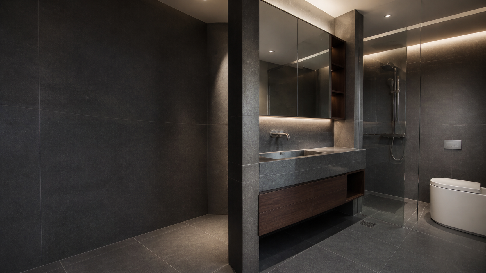
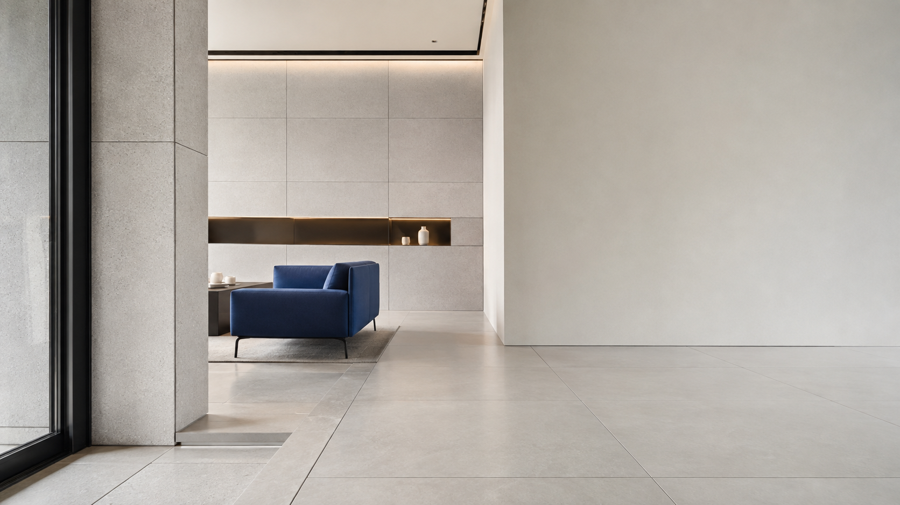
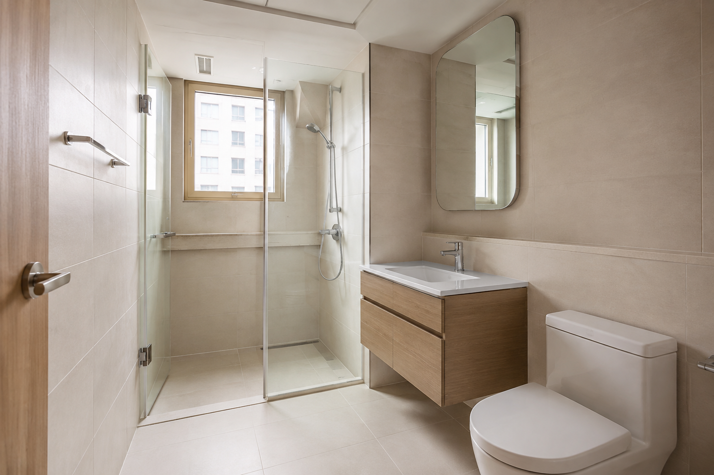

01↗
01↗
CORPORATE / STANDARD
정돈된 기업형
여백 · 시공 기준 · 차분한 신뢰 02↗
02↗
WARM / LIVING
따뜻한 주거형
가족 · 생활 편의 · 편안한 상담욕실 리모델링 가이드 포함
03↗ARCHITECTURAL / ATELIER
어두운 건축형
하이엔드 · 소재 · 디테일소재 라이브러리 포함
04↗PRECISION / COMMERCIAL
정밀 기술형
대형 타일 · 상업 공간 · 공정현장 기준서 포함 05↗
05↗
COLOR / STUDIO
감각적인 스튜디오형
주방 · 컬러 타일 · 취향 큐레이션인터랙티브 무드 파인더 포함
06↗KOREAN CORPORATE / COLLECTION